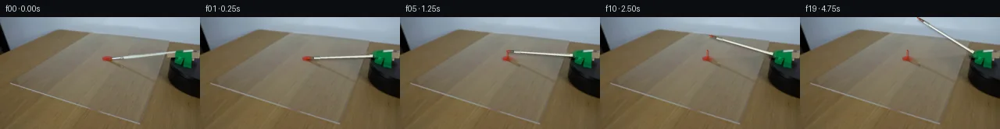

![首帧]()

Round 00
2026-11-05T05:59:11.767367+00:00像素候选变化代码 +201/−0inspection 更新
pixels 7824d3ca683bc705 · code 6950a7debd97d2c1
查看本轮 generate.py 真实 diff
--- previous/generate.py
+++ current/generate.py
@@ -0,0 +1,201 @@
+#!/usr/bin/env python3
+"""Generate a 20-frame pixel continuation from the supplied first frame.
+
+Method: local OpenCV inpainting for the original thin brush, followed by
+supersampled analytic rendering of the rotating brush, its shadow, and paint
+transfer. No external images, models, masks, or engines are used.
+"""
+
+from pathlib import Path
+import math
+
+import cv2
+import numpy as np
+from PIL import Image, ImageChops, ImageDraw, ImageFilter
+
+from artifact_io import save
+
+
+ROOT = Path(__file__).resolve().parent
+W, H = 256, 144
+SCALE = 4
+PIVOT = np.array([229.0, 49.5], dtype=np.float64)
+TIP_RADIUS = 92.1
+ANGLE0 = math.atan2(53.0 - PIVOT[1], 137.0 - PIVOT[0])
+
+
+def ease(p: float) -> float:
+ """Cubic ease in/out for a motor that starts and settles smoothly."""
+ return p * p * (3.0 - 2.0 * p)
+
+
+def point(angle: float, radius: float) -> tuple[float, float]:
+ return (
+ float(PIVOT[0] + math.cos(angle) * radius),
+ float(PIVOT[1] + math.sin(angle) * radius),
+ )
+
+
+def scaled(points):
+ return [(int(round(x * SCALE)), int(round(y * SCALE))) for x, y in points]
+
+
+def make_clean_background(source: np.ndarray) -> np.ndarray:
+ """Remove only the source brush arm, retaining the paint and fixture."""
+ mask = np.zeros((H, W), dtype=np.uint8)
+ # The thin line includes shaft, ferrule, and its small cast shadow. Starting
+ # at x=144 deliberately preserves the red dollop centered at x=137.
+ cv2.line(mask, (144, 53), (224, 47), 255, 7, cv2.LINE_AA)
+ cv2.ellipse(mask, (151, 52), (10, 4), -4, 0, 360, 255, -1, cv2.LINE_AA)
+ # Avoid modifying the green holder even where the removal mask approaches it.
+ green = (
+ (source[:, :, 1].astype(np.int16) > source[:, :, 0].astype(np.int16) * 1.28)
+ & (source[:, :, 1].astype(np.int16) > source[:, :, 2].astype(np.int16) * 1.12)
+ & (source[:, :, 1] > 55)
+ )
+ mask[green] = 0
+ return cv2.inpaint(source, mask, 4, cv2.INPAINT_TELEA)
+
+
+def paint_streak_layer(frame_index: int, current_angle: float) -> Image.Image:
+ """A short wet streak pulled out of the dollop during initial contact."""
+ layer = Image.new("RGBA", (W * SCALE, H * SCALE), (0, 0, 0, 0))
+ draw = ImageDraw.Draw(layer)
+ if frame_index == 0:
+ return layer
+
+ # Paint transfers only over the first 6.4 degrees, then stays on the sheet.
+ end = min(current_angle, ANGLE0 + math.radians(6.4))
+ if end <= ANGLE0:
+ return layer
+ samples = np.linspace(ANGLE0 + math.radians(0.4), end, 22)
+ pts = [point(float(a), TIP_RADIUS - 0.6) for a in samples]
+ # A subdued edge/shadow under the glossy pigment.
+ draw.line(scaled([(x + 0.6, y + 1.0) for x, y in pts]), fill=(82, 36, 23, 55), width=3 * SCALE)
+ draw.line(scaled(pts), fill=(158, 35, 24, 185), width=2 * SCALE)
+ if len(pts) > 4:
+ draw.line(scaled([(x - 0.35, y - 0.2) for x, y in pts[2:]]), fill=(226, 77, 50, 125), width=SCALE)
+ # Tiny thinning bead at the final pulled edge.
+ x, y = pts[-1]
+ r = 0.9
+ draw.ellipse((int((x-r)*SCALE), int((y-r)*SCALE), int((x+r)*SCALE), int((y+r)*SCALE)), fill=(179, 42, 28, 170))
+ return layer
+
+
+def brush_layer(angle: float, frame_index: int) -> Image.Image:
+ """Render a compact realistic brush at a given image-plane angle."""
+ layer = Image.new("RGBA", (W * SCALE, H * SCALE), (0, 0, 0, 0))
… diff truncated; 114 more lines …